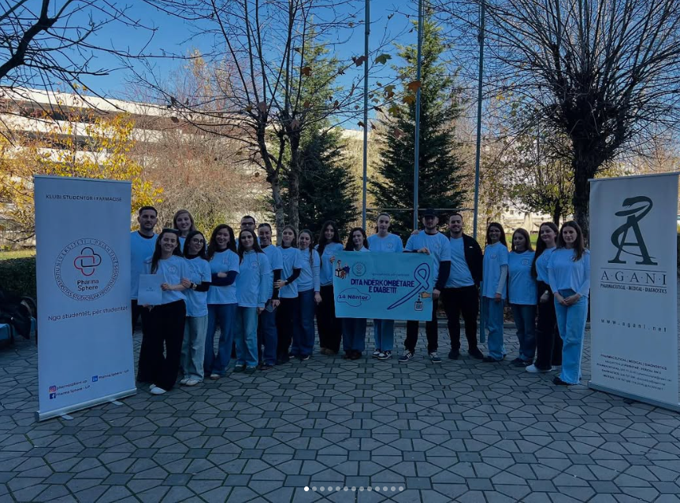
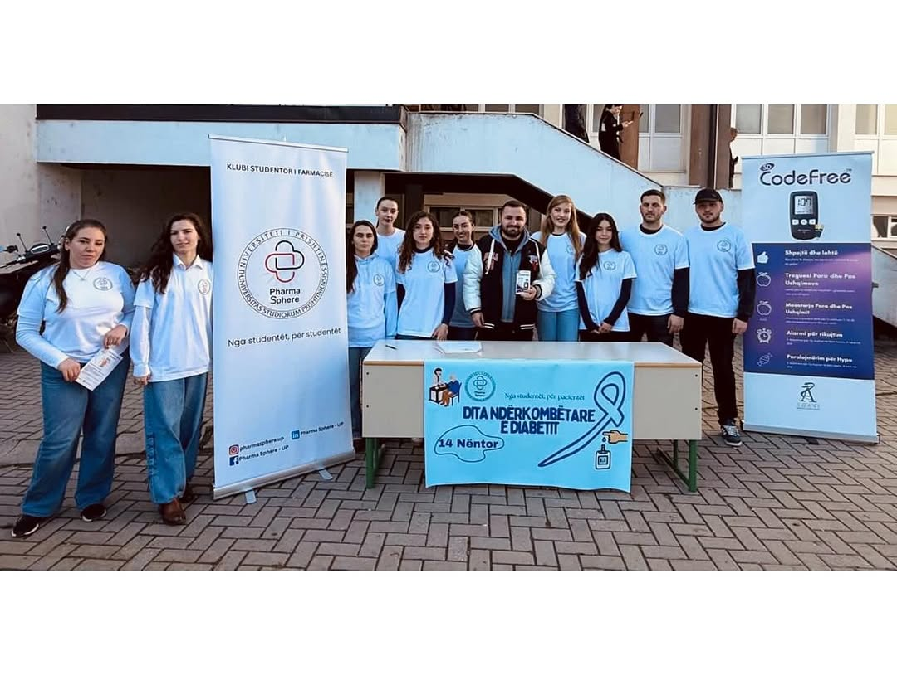
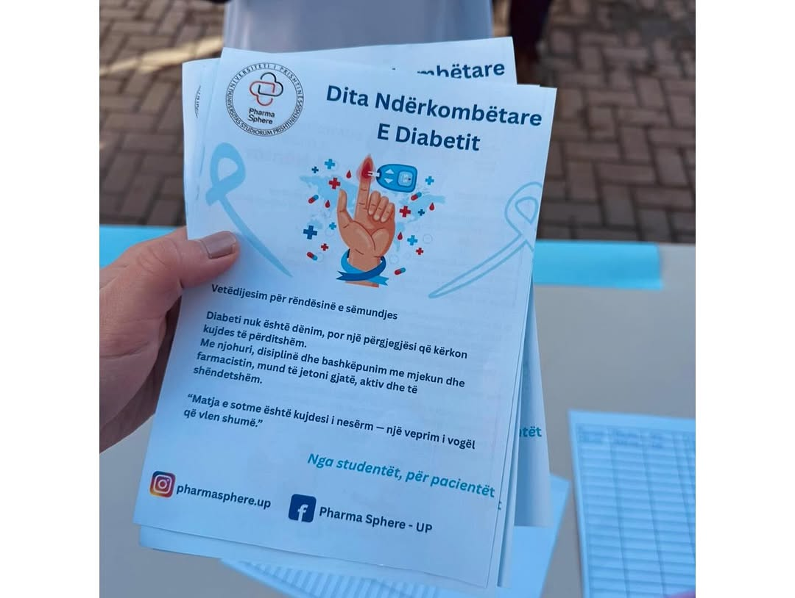
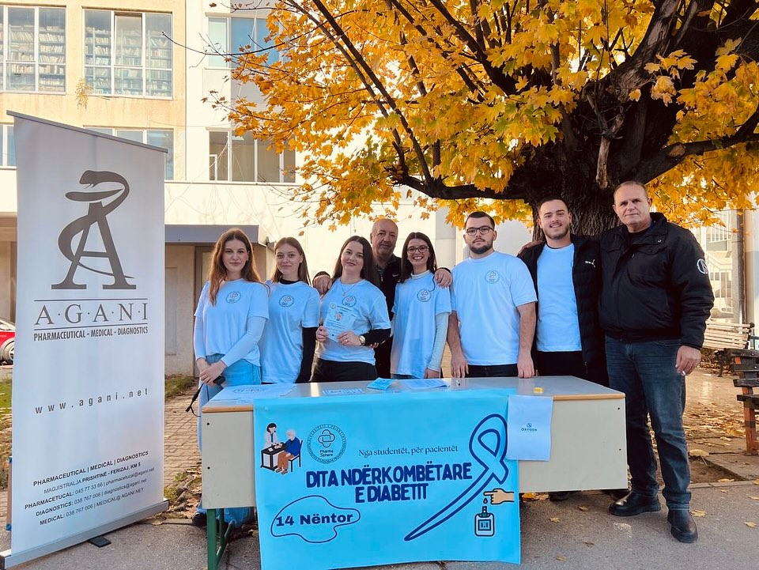
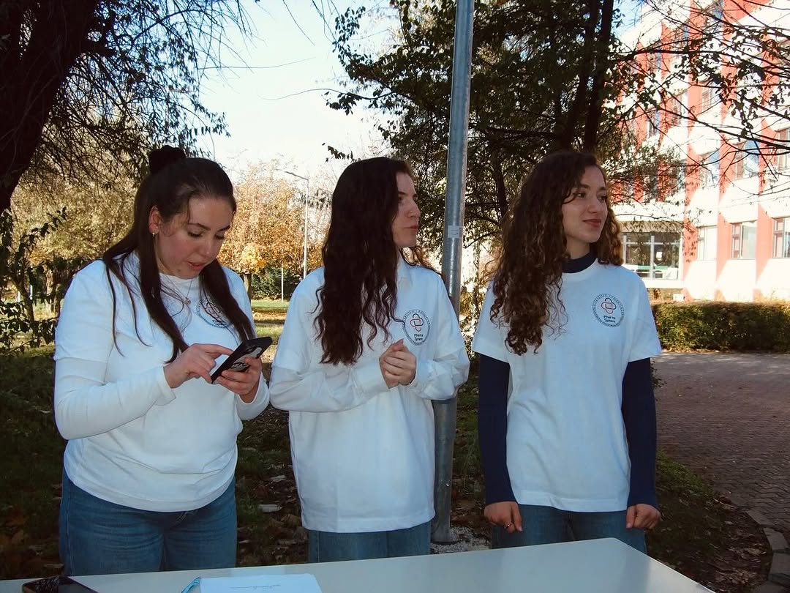
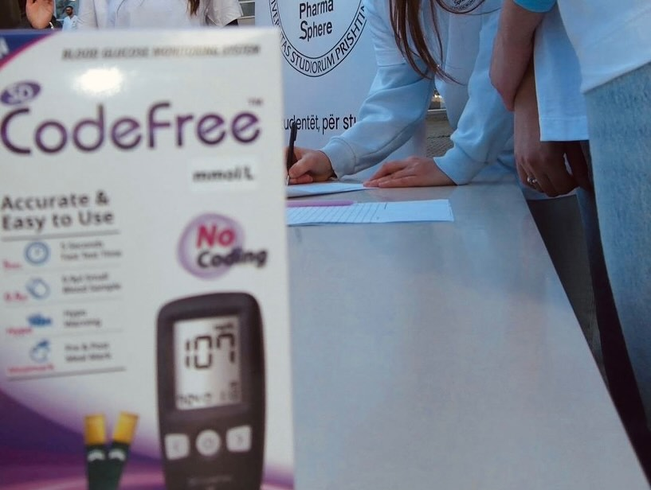
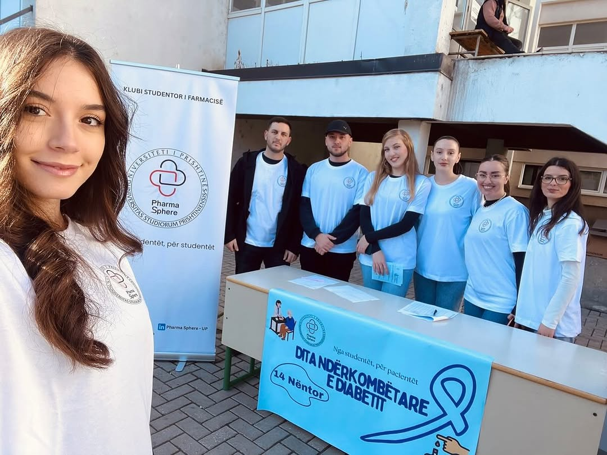
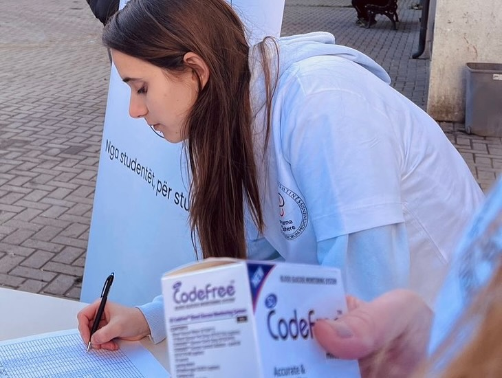
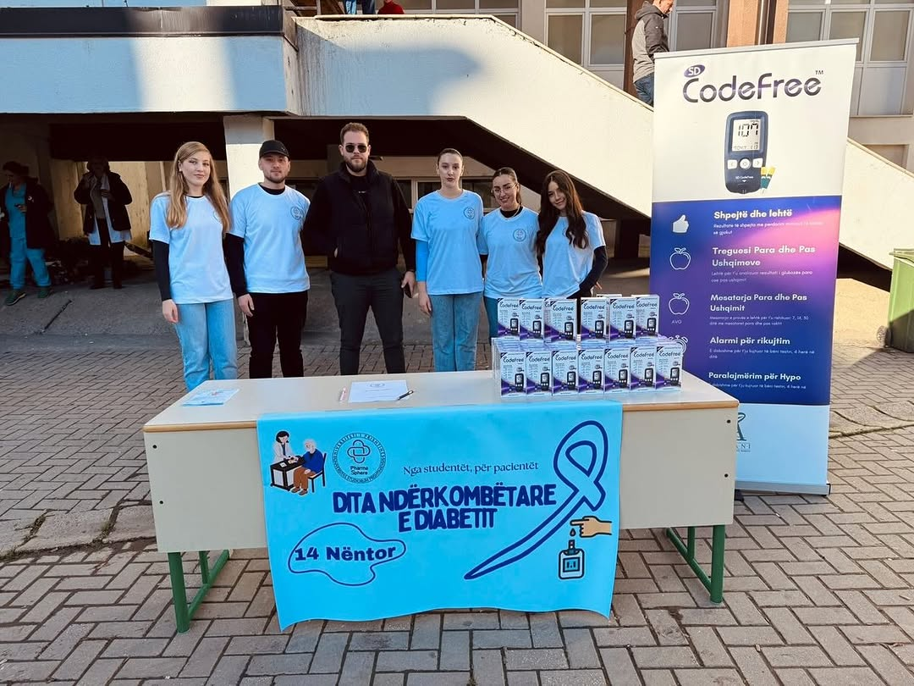
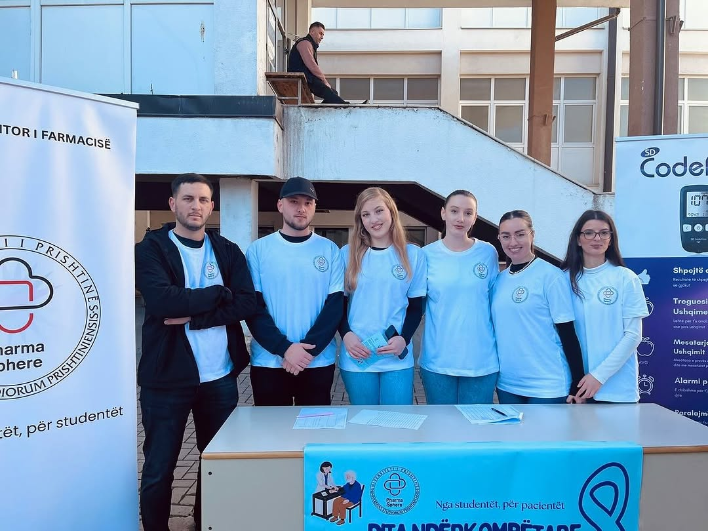

Në nder të Ditës Botërore të Diabetit, sot Klubi PharmaSphere arriti të shpërndajë gjithsej 154 aparate për matjen e glukozës, nga të cilat 100 u dhuruan me shumë bujari nga depo Agani. Mbështetja e tyre i dha një dritë shprese dhe rriti vetëdijesimin për diabetin në komunitetin tonë. Gjatë shpërndarjes, studentët tanë patën mundësinë të takojnë pacientët, t’u shpjegojnë përdorimin e aparatit, rëndësinë e matjes së rregullt të glukozës dhe rolin jetik të monitorimit të përditshëm. Ky moment i ndarë së bashku nuk ndihmoi vetëm pacientët, por i dha studentëve tanë një përvojë të çmuar dhe zemërplotë në edukimin shëndetësor. Një falënderim i madh dhe mirënjohje e veçantë depo Agani, për bujarinë dhe gatishmërinë e tyre të menjëhershme që ndriçoi ditën e shumë njerëzve!Aktivitetit të shpërndarjes së 154 aparateve për matjen e glukozës nga Klubi PharmaSphere, iu bashkua me shumë bujari edhe kompania Oxygen Pharma, e cila dhuroi 50 aparate me nga 50 traka secili. Ky kontribut i vlefshëm ka ndihmuar që edhe më shumë pacientë dhe familjarë të tyre të përfitojnë nga ky aksion humanitar.